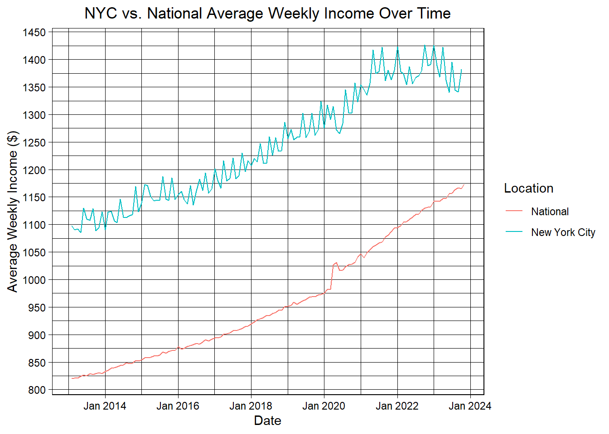
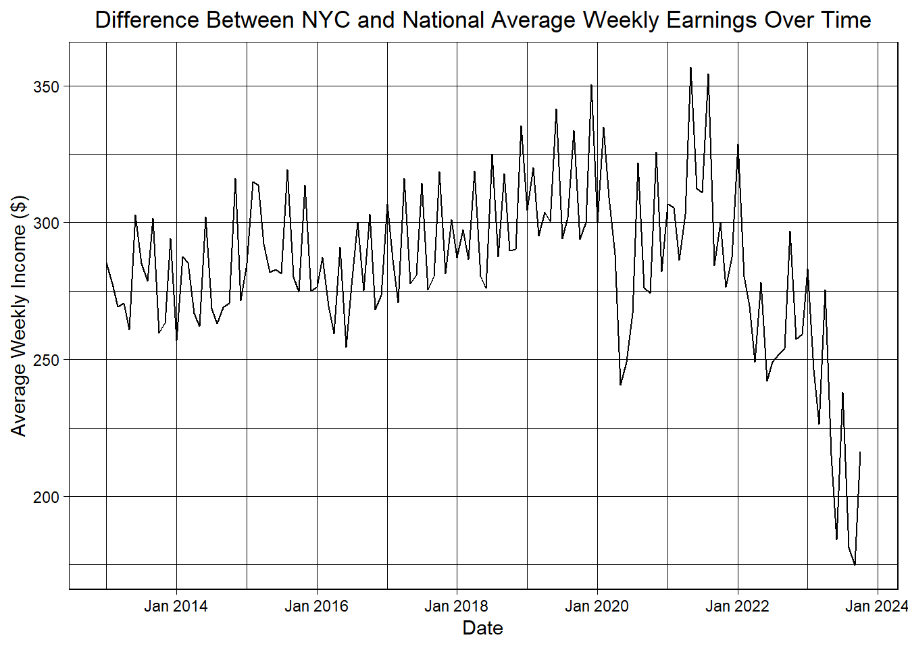

The following objects are masked from 'package:stats':
filter, lag
The following objects are masked from 'package:base':
intersect, setdiff, setequal, union
Code
library(GGally)
Warning: package 'GGally' was built under R version 4.3.2
Registered S3 method overwritten by 'GGally':
method from
+.gg ggplot2
Code
nyc_weekly_earnings <-read.csv("nyc_weekly_earnings.csv")for (col inc("Jan", "Feb", "Mar", "Apr", "May", "Jun", "Jul", "Aug", "Sep", "Oct", "Nov" , "Dec", "Annual")) { nyc_weekly_earnings[[col]] <-as.numeric(gsub("[\\$,]", "", nyc_weekly_earnings[[col]]))}nyc_weekly_earnings <-subset(nyc_weekly_earnings, Year >=2013)nyc_weekly_earnings <- nyc_weekly_earnings |> dplyr::select(-Annual)national_weekly_earnings <-read.csv("Average weekly earnings of all employees, total private, seasonally adjusted-national.csv")
Code
nyc_weekly_earnings <-pivot_longer(nyc_weekly_earnings, cols =-Year, names_to ="Month", values_to ="Value")national_weekly_earnings <-pivot_longer(national_weekly_earnings, cols =-Year, names_to ="Month", values_to ="Value")nyc_weekly_earnings$Location <-"New York City"national_weekly_earnings$Location <-"National"weekly_earnings <-rbind(nyc_weekly_earnings, national_weekly_earnings)weekly_earnings$Date <-as.Date(paste(weekly_earnings$Year, weekly_earnings$Month, "01", sep ="-"), format ="%Y-%b-%d")weekly_earnings <- weekly_earnings |>mutate(PercentChange =c(((Value -lag(Value)) /lag(Value)) *100))weekly_earnings <-na.omit(weekly_earnings)ggplot(weekly_earnings, aes(x = Date, y = Value, color = Location)) +geom_line() +labs(title ="NYC vs. National Average Weekly Income Over Time",x ="Date",y ="Average Weekly Income ($)")+theme_linedraw()+scale_x_date(date_breaks ="2 year", date_labels ="%b %Y")+scale_y_continuous(breaks =seq(800, 1450, by =50))+theme(plot.title =element_text(hjust =0.5))

Code
weekly_earnings <- weekly_earnings |>mutate(PercentChange =c(((Value -lag(Value)) /lag(Value)) *100))subsampled_df <- weekly_earnings |>slice(seq(1, n(), by =2))subsampled_df <-na.omit(subsampled_df)ggplot(subsampled_df, aes(x = Date, y = PercentChange, color = Location)) +geom_line() +labs(title ="Percent Change in NYC vs. National Average Weekly Income Over Time",x ="Date",y ="Percent Change in Average Weekly Income (%)")+theme_linedraw()+scale_x_date(date_breaks ="2 year", date_labels ="%b %Y")+theme(plot.title =element_text(hjust =0.5))
Code
nyc_weekly_earnings$Difference <- nyc_weekly_earnings$Value - national_weekly_earnings$Valuenyc_weekly_earnings$Date <-as.Date(paste(nyc_weekly_earnings$Year, nyc_weekly_earnings$Month, "01", sep ="-"), format ="%Y-%b-%d")nyc_weekly_earnings <-na.omit(nyc_weekly_earnings)ggplot(nyc_weekly_earnings, aes(x = Date, y = Difference)) +geom_line() +labs(title ="Difference Between NYC and National Average Weekly Earnings Over Time",x ="Date",y ="Average Weekly Income ($)")+theme_linedraw()+scale_x_date(date_breaks ="2 year", date_labels ="%b %Y")+theme(plot.title =element_text(hjust =0.5))

Weekly hours next (might not include hourly earnings because could be redundant). Then I’ll do a parallel coordinate plot for the different sectors and their employment rates. Also don’t need to include all three of these graphs, I just thought it was interesting to dive further into depth what was happening. Will also want to do probably just a simple unemployment rate one. pushhh
Code
NYC_stats <-read.csv("NYC Employment Statistics.csv")NYC_stats <- NYC_stats |> dplyr::select(c(YEAR, INDUSTRY_TITLE, JUN))NYC_stats <-subset(NYC_stats, INDUSTRY_TITLE %in%c("Information", "Telecommunications","Financial Activities", "Financial Investments and Related Activities including Financial Vehicles", "Professional and Business Services", "Professional, Scientific, and Technical Services", "Computer Systems Design and Related Services", "Management, Scientific, and Technical Consulting Services", "Scientific Research and Development Services", "Advertising, Public Relations, and Related Services", "Government"))NYC_stats$NYC_Values <- NYC_stats$JUNNYC_stats$Year <- NYC_stats$YEARNYC_stats <- NYC_stats |> dplyr::select(-JUN)NYC_stats <- NYC_stats |> dplyr::select(-YEAR)NYC_stats <-subset(NYC_stats, Year >=2013)NYC_stats$NYC_Values <-as.numeric(NYC_stats$NYC_Values)
Code
telecoms <-read.csv("Telecommunications-national.csv")SciRe <-read.csv("Scientific research and development-national.csv")ProSciTech <-read.csv("Professional,scientific,and technical services-national.csv")ProBuss <-read.csv("Professional and Business Services-national.csv")ManSciTech <-read.csv("Management, scientific, and technical consulting services-national.csv")Info <-read.csv("Information(news) - national.csv")Gov <-read.csv("Government-national.csv")FinInv <-read.csv("Financial Investments-national.csv")FinAct <-read.csv("Financial Activities-national.csv")CompSys <-read.csv("Computer systems design and related services-national.csv")Advert <-read.csv("Advertising, public relations, and related services-national.csv")telecoms$INDUSTRY_TITLE <-"Telecommunications"SciRe$INDUSTRY_TITLE <-"Scientific Research and Development Services"ProSciTech$INDUSTRY_TITLE <-"Professional, Scientific, and Technical Services"ProBuss$INDUSTRY_TITLE <-"Professional and Business Services"ManSciTech$INDUSTRY_TITLE <-"Management, Scientific, and Technical Consulting Services"Info$INDUSTRY_TITLE <-"Information"Gov$INDUSTRY_TITLE <-"Government"FinInv$INDUSTRY_TITLE <-"Financial Investments and Related Activities including Financial Vehicles"FinAct$INDUSTRY_TITLE <-"Financial Activities"CompSys$INDUSTRY_TITLE <-"Computer Systems Design and Related Services"Advert$INDUSTRY_TITLE <-"Advertising, Public Relations, and Related Services"national_stats <-rbind(telecoms, SciRe, ProSciTech, ProBuss, ManSciTech, Info, Gov, FinInv, FinAct, CompSys, Advert)national_stats <- national_stats |> dplyr::select(c(Year, INDUSTRY_TITLE, Jun))national_stats <-pivot_longer(national_stats, cols =-c(Year, INDUSTRY_TITLE), names_to ="Month", values_to ="National_Values")national_stats <- national_stats |> dplyr::select(-Month)
Code
NYC_stats_wide <-spread(NYC_stats, key = Year, value = NYC_Values)national_stats_wide <-spread(national_stats, key = Year, value = National_Values)NYC_stats_wide$Location <-"New York City"national_stats_wide$Location <-"National"national_stats_wide$"2018"<- (national_stats_wide$"2018"/162210) *100NYC_stats_wide$"2018"<- (NYC_stats_wide$"2018"/4262.878) *100national_stats_wide$"2019"<- (national_stats_wide$"2019"/163073) *100NYC_stats_wide$"2019"<- (NYC_stats_wide$"2019"/4261.786) *100national_stats_wide$"2020"<- (national_stats_wide$"2020"/159900) *100NYC_stats_wide$"2020"<- (NYC_stats_wide$"2020"/4061.283) *100national_stats_wide$"2021"<- (national_stats_wide$"2021"/161192) *100NYC_stats_wide$"2021"<- (NYC_stats_wide$"2021"/4116.222) *100national_stats_wide$"2022"<- (national_stats_wide$"2022"/164002) *100NYC_stats_wide$"2022"<- (NYC_stats_wide$"2022"/4099.68) *100national_stats_wide$"2023"<- (national_stats_wide$"2023"/166951) *100NYC_stats_wide$"2023"<- (NYC_stats_wide$"2023"/4184.884) *100stats <-rbind(NYC_stats_wide, national_stats_wide)ggparcoord(NYC_stats_wide, columns =c(7:12), groupColumn =1, title ="Potential Industries Labor Force Share in NYC")
Code
ggparcoord(stats, columns =c(1, 7:12), groupColumn =13, title ="Comparing NYC Potential Industries Labor Force Percent Share vs. National")